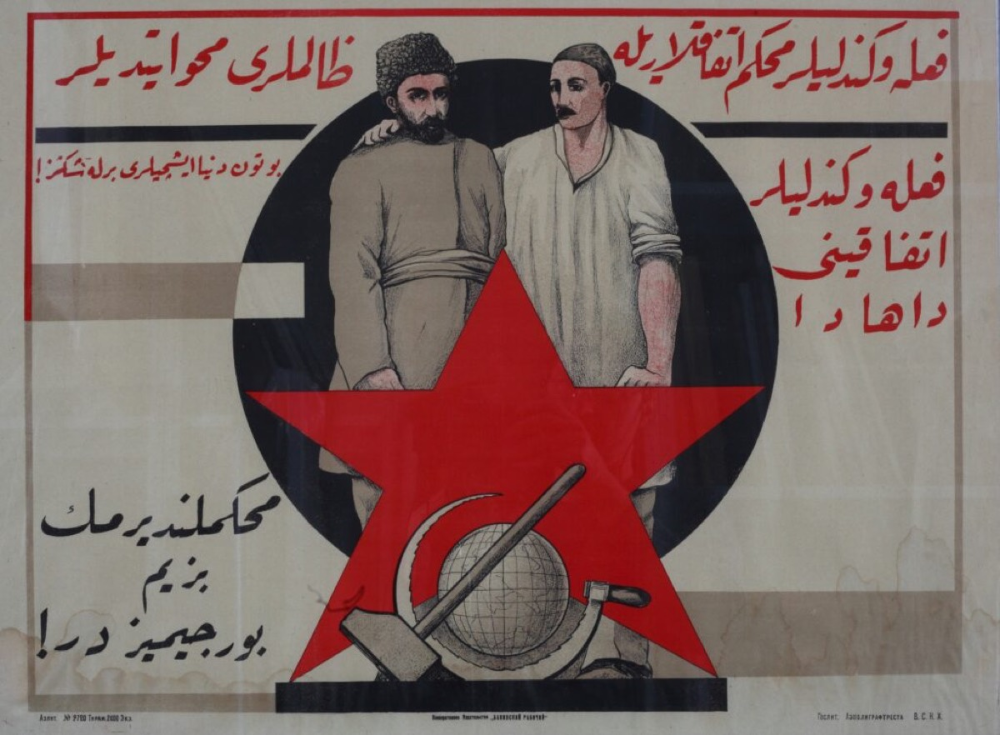

Bakü’de Ekim
Bakü’nün 1917 Ekim Devrimi’ndeki rolünü anlamak için öncelikle şehrin Çarlık Rusyası açısından taşıdığı öneme bakmak gerekiyor. XX. yüzyılın ikinci yarısından itibaren petrol üretiminin hızla gelişmesiyle Bakü yalnızca…

Bakü’nün 1917 Ekim Devrimi’ndeki rolünü anlamak için öncelikle şehrin Çarlık Rusyası açısından taşıdığı öneme bakmak gerekiyor. XX. yüzyılın ikinci yarısından itibaren petrol üretiminin hızla gelişmesiyle Bakü yalnızca Kafkasya’nın değil, Rus İmparatorluğu’nun da en önemli sanayi ve enerji merkezlerinden biri hâline geldi. XX. yüzyılın başında dünya petrol üretiminin yarısından fazlası Bakü’den karşılanıyordu. Şehir, petrolüyle imparatorluğun sanayi ve ulaşım sisteminin temel dayanaklarından birini oluşturuyordu. Bu nedenle Bakü, Çarlık yönetimi açısından ekonomik olduğu kadar stratejik bir öneme de sahipti.
Petrol zenginliği, şehirde büyük bir işçi sınıfının ortaya çıkmasını da beraberinde getirdi. Rusya’nın farklı bölgelerinden, Kafkasya’dan ve İran’dan gelen işçiler Bakü’nün çok uluslu toplumsal yapısını şekillendirdi. Petrol sahaları, rafineriler ve liman çevresinde yoğunlaşan bu işçi nüfusu, zamanla imparatorluğun en önemli sanayi proletaryalarından birini oluşturdu. Bakü, böylece yalnızca petrol üretiminin değil; grevlerin, sendikal mücadelenin ve devrimci örgütlenmenin de merkezlerinden biri hâline geldi.
Bu dönüşümde Bolşevik hareketin önemli isimlerinin Bakü ile kurduğu ilişki de belirleyiciydi. Stalin, 1907 yılında Bakü’ye gelerek burada bolşevik örgütlenmenin güçlendirilmesi için çalıştı. 1907-1910 yılları arasında Balahanı, Bibiheybet ve diğer sanayi bölgelerinde faaliyet yürüttü. Grevler, parti yayınları ve işçi mücadeleleri Stalin’in Bakü’deki siyasî faaliyetlerinin temel unsurları arasındaydı. Bakü, onun devrimci siyasî kariyerinde de önemli bir deneyim alanı oldu. Lavrenti Beriya da Bakü’nün devrimci hareketiyle ilişkili isimlerden biriydi. Bakü Politeknik Okulu’nda öğrenim gördüğü dönemde Bolşeviklerle ilişki kurdu.
Bakü’nün bu tarihsel konumu, 1917’de yaşanan gelişmeleri de doğrudan etkiledi. Savaş öncesinde şehirde yaklaşık 196 bin işçi çalışıyordu. Bunların %41,1’i Azerbaycanlı, %27,5’i Rus, %17,7’si Ermeni, %13,7’si ise diğer milletlerdendi. Fakat bu çok uluslu işçi kitlesi kendi içinde eşit değildi. Nitelikli işçilerin ve ustabaşıların %76,3’ünü Azerbaycanlı olmayanlar oluştururken niteliksiz işçilerin % 54’ü Azerbaycanlıydı. Başka bir deyişle, işyerlerindeki ücret ve statü farklılıkları büyük ölçüde milliyet sınırlarıyla örtüşüyordu. Sol örgütler, bu ayrışmayı aşarak işçileri millî kimliklerinin ötesinde ortak bir sınıf temelinde örgütlemeye çalışıyordu. 1904’te kurulan Hümmet, Müslüman işçiler arasında faaliyet yürütmek üzere Rusya Sosyal Demokrat İşçi Partisi’nin Bakü Komitesi’ne bağlı olarak çalışıyordu. Savaş yıllarında İran’dan gelen göçmen işçiler ise Adalet örgütünü kurmuştu. Çarlığın devrilmesinden sonra bu örgüt, Kafkasya’daki Bolşeviklerle birlikte hareket etmeye başladı.
Şubat Devrimi’nden Ekim’e: Bakü’de siyasî dengelerin değişimi
Mart 1917’de Bakü’de Bolşeviklerin henüz kayda değer bir ağırlığı yoktu. İşçi Sovyeti’nin ilk toplantısına katılan 52 delegenin yalnızca 9’u Bolşevik’ti. Buna rağmen Bolşevik Stepan Şaumyan, toplantıda bulunmadığı hâlde Sovyet başkanlığına seçildi. Bu tercihte, 1914 grevlerinden gelen tanınırlığı belirleyici olmuştu. Mayıs ayında Sovyet’te Menşeviklerin 56, Bolşeviklerin ise 25 üyesi bulunuyordu.
Aynı ay Bolşevikler, Müslüman işçiler arasında faaliyetlerini genişletme kararı aldı. Azerbaycan dilinde gazete çıkarmak ve Sovyet’e Müslüman temsilciler kazandırmak bu planın temel adımlarıydı. Müslüman işçilerle ilişkileri yürütme görevi Caparidze’ye verildi. Bu örgütlenme çabalarının merkezinde Hümmet vardı. Nerimanov’un başkanlığında Mart 1917’de yeniden faaliyete geçen örgütün Sovyet’teki delegeleri fiilen Bolşevikleri temsil ediyordu.
Bununla birlikte Hümmet’in toplumsal etkisi sınırlı kaldı. Maden bölgelerinin çoğunda örgütlenememişti. Müslüman işçilerin önemli bir bölümü Duma ve Kurucu Meclis seçimlerinde Müsavat’ı destekledi. 22 Ekim’de yapılan Sovyet seçimlerinde Müsavat 9617 oy alırken Eserler 6305, Bolşevikler ise 3.823 oyda kaldı. Müsavat’ın toplumsal tabanı da kendi içinde homojen değildi. Partinin sol kanadı işçilere dayanırken Gence merkezli sağ kanadın toplumsal dayanağı farklıydı. Ekim ayının sonlarında toplanan ilk parti kongresine katılan delegelerin yaklaşık %90’ı işçi veya köylüydü. Müsavat, Eylül ayında savaşa karşı tutum alarak bolşeviklere yaklaştı. 7 Kasım’daki konferansta da Eser ve Menşeviklerin Bolşevikleri yalnız bırakma önerisine karşı çıktı. Buna rağmen sosyalist partiler Müsavat’ın Sovyet’e katılmasına izin vermedi. Gerekçeleri açıktı: Müsavat, onlara göre sosyalist ve işçi partisi değildi.
Bakü’de Ekim Devrimi: İktidarın el değiştirmesi
Savaşın ve kıtlığın yarattığı baskı giderek ağırlaşıyordu. Yaz boyunca Bakü, Şamahı ve Nahçıvan garnizonlarının büyük bölümü Bolşeviklerin safına geçti. 27 Eylül’de 65 binden fazla işçinin katıldığı genel grev başladı. 13 Ekim’de ise Menşevik ve Eserlerden oluşan yürütme komitesi istifa etti. Petrograd’da 7 Kasım 1917’de gerçekleşen Bolşevik iktidar değişimi, Rusya İmparatorluğu’nun diğer önemli merkezlerinde de yankı buldu.
Bakü’de ise iktidar mücadelesi kendine özgü bir seyir izledi. Petrograd’daki gelişmelerin haberi şehre ulaştığında Bakü Sovyeti 9 Kasım’da olağanüstü toplantıya çağrıldı. Toplantının temel gündemi, şehirde iktidarın kime ait olacağıydı. Fakat toplantıda Eserler, Menşevikler ve Taşnaklar 246’ya karşı 166 oyla üstünlük sağladı. Üç parti, Petrograd’daki ayaklanmanın tasfiye edilmesini istiyordu. Bolşevikler bu çoğunluğu aşmak için fabrika, alay ve donanma komitelerinin delegelerini de toplantıya çağırdı. Böylece katılımcı sayısı 468’e yükseldi. Sağ Eserler, Menşevikler ve Taşnaklar salonu terk etti. Geriye Bolşevikler ve müttefiklerinden oluşan 344 kişilik bir topluluk kaldı. Bu delegeler, 13 Kasım’da Sovyet’i Bakü’deki en yüksek yasama ve yerel yönetim otoritesi ilan etti. 15 Kasım’da ise Sovyet İcra Komitesi şehrin en yüksek yönetim organı hâline geldi. Böylece Bakü, Güney Kafkasya’da Sovyet iktidarının ilan edildiği ilk şehir oldu. Bu gelişme, yalnızca yerel bir iktidar değişimi değildi. Çarlık Rusyası’nın en önemli petrol merkezlerinden birinin Bolşeviklerin denetimine girmesi, yeni Sovyet yönetimine ekonomik ve stratejik açıdan da önemli bir avantaj sağlıyordu. Bakü’nün petrolü, Kafkasya’daki siyasî hakimiyetin yanı sıra Sovyet Rusyası’nın ekonomik geleceği açısından da belirleyici bir kaynak olacaktı.
Seçimler, siyasî dengeler ve Bakü’nün Bolşevik Devrimi’ndeki yeri
Kasım ayının sonunda yapılan şehir duması seçimleri, Bakü’deki siyasî dengelerin karmaşıklığını bir kez daha ortaya koydu. Müslüman millî partiler cephesi 18.384 oyla (%25,25) birinci sıraya yerleşti. Sosyalist blok 17.523 oy (%24,05), Taşnaklar ise 13.120 oy (%20,17) aldı. Bolşevikler, 11.202 oyla (%15,37) dördüncü sırada kaldı. Ama diğer siyasî grupların bloklar hâlinde seçime girmesi, bolşeviklerin sıralamadaki yerini etkiliyordu. Tek tek partiler esas alındığında Duma’nın en büyük seçim listesi Bolşeviklere aitti.
Aralık ortasında yapılan Sovyet seçimleri ise farklı bir tablo ortaya koydu. Seçilen 200 delegenin 48’i Bolşevik, 85’i Eser (çoğunluğu sol Eser), 36’sı Taşnak, 18’i Müsavatçı ve 13’ü Menşevik’ti. Böylece sol blok Sovyet’te belirleyici bir ağırlık kazandı. 31 Aralık’ta oluşturulan yürütme komitesine 6 Bolşevik, 5 Taşnak, 4 sol Eser, 3 sağ Eser ve 2 Müsavatçı girdi.
Sonuç olarak Bakü’de Bolşeviklerin ağırlık kazanması, tek başına bir parti başarısıyla açıklanamaz. Savaşın yarattığı yıkım, ekmek kıtlığı, garnizonlardaki değişim, kitlesel grevler ve çok uluslu işçi nüfusunun toplumsal dinamikleri aynı tarihsel süreçte birleşmişti. Ekim Devrimi’nin Bakü’deki başarısı, bu ekonomik, toplumsal ve siyasî koşulların kesiştiği noktada ortaya çıktı.